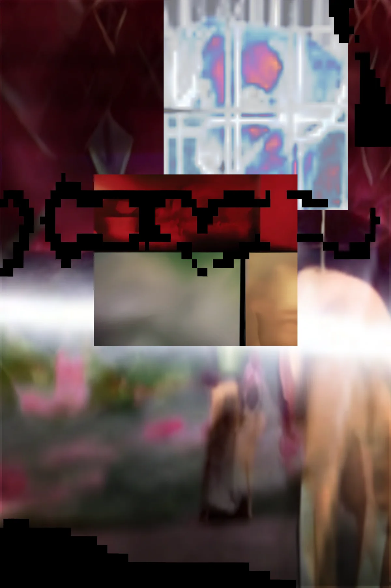

A sparse broadcast, equal parts bulletin and soft interference. Keep the volume low and the margins wide.
Trace the line to signal / arrival, or follow the footnotes toward classified field notes.
The rest is ambient, held in the space between the links.